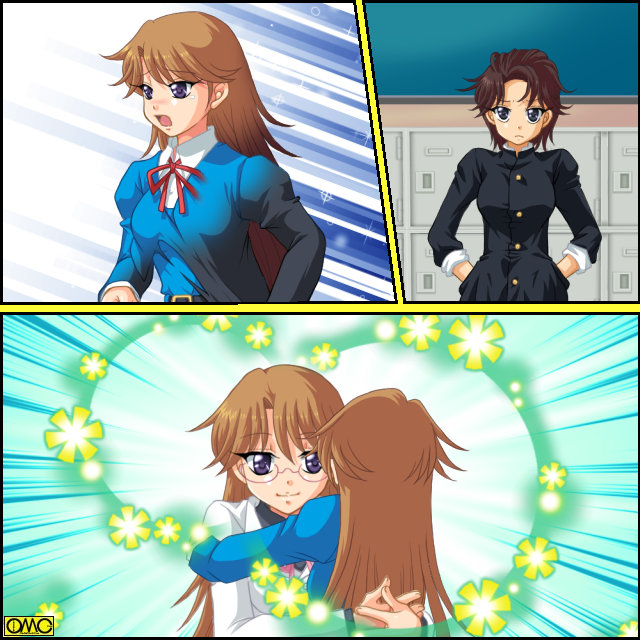

この日は二月十四日。バレンタインデー。
秋津の通う高校は、本来なら男子校ゆえにありえなかった光景が、あちこちで展開されていた。
チョコにたくした、少女から少年への愛の告白。
だが、その少女達は全て元・男。それも不良男子だった。
「か、勘違いしないでよねっ。これは義理なんだから。そう。あんたのことなんて、好きでもなんでもないんだからっ」
パステルピンクのツインテール。ファニーフェイスの堂島だりあが、頬を染めてそっぽを向きつつ、かわいらしくラッピングされた包みを、男子生徒に差し出していた。
当の男子生徒は戸惑っている。
好き嫌い以前にこのだりあ、元々は男だったのである。
それが今やアニメキャラ風の美少女。正体を知らなければ、嬉々としてチョコレートを受け取るところだった。
また別の場所では、もっとありえない光景が展開されていた。
「はい。斉藤のお兄ちゃん。チョコあげるね」
食い意地がたたり、童女の姿になった江原栄介は、エリと言う名の少女として、無垢な微笑でチョコを突き出している。
高校の敷地内で、小学生女児が高校生男子にチョコを渡すなど、まさにシュール。
「あ。ありがとうな」
こちらは童女と言うことで、恋愛感情から外れるゆえか、素直に受け取る斉藤。
「あ…あの…」
トレードマークのポニーテールが揺れるほど、もじもじしているセーラー服の少女。近田千鶴。
こちらも生まれて初めて男に対して、チョコを贈ろうとしていた。
相手は、千鶴のかつての姿を彷彿とさせる巨漢だった。
「タケルさん。好きですっ」
顔を真赤にして、精一杯の勇気で告白。
「わ、我輩をかっ！？」
「キン肉ダルマン」と揶揄される巨漢も、チョコをもらうのは初めてだった。
「ありがとう。うれしいのであぁぁぁぁぁぁぁるっ」
喜色満面でチョコを受け取る。
「そ、そうか」
ほっとした表情の千鶴。笑顔のタケルが大声で続く。
「いやぁ。それにしてもお前がこんなことをするなんて。もうすっかり身も心も女だな」
言われて千鶴は恥じ入る。
「ば、ばかぁっ」
照れからつい一撃を繰り出してしまう。平手ではなく拳で。それがタケルの胸板にクリーンヒットする、が
「いいパンチだ。女だてらに鍛えているようだな」
平然と受け止めた。
攻撃が通じず、屈辱とばかしに怒り狂うかと思われた千鶴は、逆に恍惚の表情をしている。
（ああ。なんて逞しいんだ。まさに理想の男）
完全に恋する少女だった。
このイラストはＯＭＣによって作成されました。
クリエイターの高天リオナさんに感謝！
「世も末だな」
秋津が醒めた口調で語る。
トレードマークとしていたリーゼントはなく、学制服も通常のものだ。
それ以外は髪型こそばらばらだが、いわゆる長ランで「不良」をアピールしていた。
放課後の校庭。あちこちで『告白』を目撃してきた五人の男子。
２０人の不良生徒達をひとまとめにしたＺ組。
その中で女性化を免れた「生き残り」達だった。
後は全て新任教師。大原乙女が原因で少女と化している。
その比率。５：１５．
肩身の狭いことこの上ない。しかもこの様子を見てわかる通り、１５人は完全に精神も女性化している。
恋愛対象が男と言うのは、女性精神の確固たる証拠である。
「なんとしても俺達は生き延びてやる。三月までしのげば、大原は任期切れで消える」
ライオンのたてがみのような、ぼさぼさ頭の財津全次郎がしきる。
「ちょっと消極的じゃないのか？」
丸坊主の渡辺亘（わたる）が口にする。
「生き延びりゃいいのさ」
まさにそのために、秋津はこだわり続けた『不良ファッション』を捨てた。
「だが攻撃は最大の防御って言うだろ」
顔の右半分が髪で隠れた男。植田右京が右手でコインを弄びながら言う。
そのままそのコインを高く飛ばし、左手の甲と右の手のひらで受け止める。
「表か。運はこちらに向いているぜ」
それが幸運のしるしらしい。にやりと笑う。
「むっ。ならば任せていいか？ 五家宝連ナンバーワンの博徒であるお前に」
「ああ。任せろ」
二人で話を進めるが、秋津が黙っているはずがない。
「おい。なんだその『五家宝連』ってのは？」
不良スタイルはやめても、突っ込み気質は変わらない秋津。
「ふふふ。オレたち五人のことだ。何しろオレの名は『全次郎』だしな」
「『全次郎』が『五家宝連』に加わってどうするよ…まぁいい。好きにしな。オレは関係ない」
呆れたように秋津は言うが事態は変わらない。
いよいよ最後の抵抗が始まった。
ゴッドファーザー乙女
Ｌｅｓｓｏｎ４「さよなら乙女先生」
「大原。放課後に麻雀で勝負だ」
翌日、一時間目のロングホームルーム。
入ってきた乙女にいきなり植田は勝負を要求した。
今まで女子になったもの達は、何らかの形で、乙女に「負け」を認めているケースが多い。
ならば逆に乙女に勝てば、少なくとも自分は助かるのではないか？
そう考えた生き残りの男子五名…財津の言葉で言うと、五家宝連は『攻撃は最大の防御』を地で行くことにした。
つまりそれぞれ、得意技で勝負をしかけると言うものだ。
「さすがだな。伊達に自宅に全自動麻雀卓を設置して、連日卓を囲んで、しまいにゃ奴の家が『雀荘・植田』とまで言われるほどの麻雀好きじゃねぇな」
（さぁどうだ。これで勝負を避ける。つまり逃げれば、それはすなわちこの植田右京の勝利と言うこと。屈服せねば女にはならない）
そう言う計算であった。だが
「ごめんなさい。先生。麻雀はわからないの」
一体、何着もっているのか？ この日もスーツ姿の乙女が謝る。
「で、出来ないと？」
出来ることを避ければ「逃げ」ととれる。
だが、最初から出来ないのであれば、敗北感などあろうはずがない。
プロレスラーが、リングと言う共通点はあれど、ボクサーに破れても。
マラソンランナーが、１００メートル走で、スプリンターに破れても、敗北感はない。
申し訳なく思ったのか、明るい声で乙女が代替案を出す。
「あ。でもトランプなら少しは出来るわよ。ポーカーとか」
状況が変わった。植田の表情も変わる。
「面白い。ポーカーは私のもっとも得意とするゲームだよ」
何故か口調の変わる植田。
「よし。近場の雀荘でやるつもりだったから放課後としたが、トランプなら今でも出来る。誰かトランプもってないか」
しかし誰ももっていなかった。
学校に来ているのだから、当然と言えば当然だが。
「それなら植田様。わたくしが買ってまいりますぅ」
場違いな胸元の大きくあいた、アメリカンタイプのメイド服。それもピンク色。ボブカットの小柄な少女が名乗り出た。
「ああ。それじゃ頼むぞ。松田」
「はいですぅ」
このメイドは前回「乙女襲撃計画」を首謀した、松田元紀の変貌した松田桃子であった。
元紀としての支配欲が反転して、尽くす存在になってしまった。
だから『メイド』である。
掃除等を嫌がるどころか、喜んでやる。
もっとも大半が『理想の女子』と変貌したこのクラス。
掃除当番をサボるものは、少女達にはいない。
桃子は正門から堂々と、近所のコンビニへと買いに出た。
机を向かい合わせて向かい合わせに座る乙女と植田。
「先生。学び舎でこのような博打など、望ましくないと思いますが」
和服姿の文乃が進言する。和風だからなのか、表現も古風に『学び舎』だ。
「これもコミュニケーションの形の一つよ。福本さん。ふれあいが更生につながるのよ」
「なるほど。だが勝敗度外視の遊びとはいかないぜ。俺が勝ったらこいつら全員、元の姿に戻してもらうぜ」
「うーん。先生がわざとやってるんじゃないんだけどなぁ」
とぼけているわけではない。条件が揃うと、勝手に発動する能力なのである。
何しろ本人からして、その能力の『被害者』である。
ただし、ただの一人も男に戻りたいとは言わない。
まるで、最初から女性として生を受けたかのように、自然に振舞っている。
同時に、アウトローの殻を脱ぎ捨て、新しい姿でやりなおしてる。
だからか全員、とにかく明るい。
「だとしたら先生が勝ったら、あなたも女の子になるの？」
今までの流れから行けば、当然の疑問だ。むしろ「確認」。
「なってやるさ。負けないけどな」
双方の手元に積まれた十円玉十枚。チップに見立てている。
そのチップがなくなったら負けである。
ポーカーは配られた五枚のカードで役を作り、その強弱で勝敗をきそうゲームである。
下から行くと何も揃ってない。「ノーペア」通称「ブタ」
同じ数字が二枚の「ワンペア」
それが二組の「ツーペア」
三枚揃った「スリーカード」
数字のつながった「ストレート」は、ハートとかスペードと言う「スート」がばらばらでもＯＫ。
逆に数字はばらばらでもスートが五枚同じ「フラッシュ」
同じ数字二枚と、別の数字三枚の組み合わせ「フルハウス」
同じ数字四枚の「フォーカード」
スートが同じで数字のつながった「ストレートフラッシュ」
１０ Ｊ Ａ Ｋ Ｑ…ジャッカー…じゃなくて、とにかくこの五枚でスートが同じだと「ロイヤルストレートフラッシュ」
基本的にはこれが最上位だが、あらゆるカードの代役が出来るジョーカー…ワイルドカードが加わると「ファイブカード」が成立してさらに上になる。
スートの強弱は上からスペード。ダイヤ。ハート。クラブの順である。
同じ役ならこれでジャッジする。
そしてポーカーとは駆け引きがものを言う。
基本は「ポーカーフェイス」の由来ともなった無表情で、相手に自分の手を悟らせないが、逆手にとって、良い手なのに自信のないそぶりで、相手に強気に出させチップを大量に掛けさせて、それを奪ったり、逆に弱い、それどころか「役」が成立すらしてないのに、いかにも強そうに振る舞い、相手に勝負から降りさせることが出来る。
運だけでなく頭脳で勝負を左右出来る。ゆえに植田は自信をもっていた。
「それでは配らせていただきます」
やはり前回の襲撃のさいに女子化した沼田夏樹。
こちらも青いメイド服。桃子と違い、露出の少ない英国タイプ姿で、ディーラーを務めることになった。
尽くすタイプになったので、どちらの命令にも従順に。
言い換えればどちらの味方でもなく、公平な存在である。
「始めるか」
参加料として植田はチップを一枚だす。それでカードをもらう。乙女も同様にした。
植田は机に伏せられたカードを拾い確認する。
「２枚変えてくれ」
チップを出して交換を要求する。ひと勝負につき交換は一度だけ。
二枚のカードを受け取る。思わずにやりとし掛かる。
（いい手だ。クラブ。ダイヤ。ハート様のＫ…キング オブ ハートだな。後はクラブエース。ダイヤジャックか。これだと向こうのロイヤルストレートフラッシュの確率はかなり低くなる）
もちろんスリーカードより強い手には、そこまで行かなくともある。
だがイカサマ抜きでそんなに簡単に揃うものか。そう多寡をくくっていた。
「先生。交換は？」
長い髪をまとめ上げたメイド姿。ディーラーの夏樹が尋ねる。
「いいわ。これで勝負よ」
「なにぃっ！？」
植田が驚くのも当然。カードは伏せられたまま。見てもいない。強いのか弱いのかも知らない。それで勝負だと？
ざわ・・
ざわ・・
周辺もざわめく。その乙女の大胆さに。
「ふざけてんのか？」
最初に「怒り」がきた。
「こんなの運任せでしょ。だったら見ないほうがいいわ。表情でばれちゃうし」
乙女は笑顔で言うと、チップを植田と同じ数だけ場に出した。
なるほど。自分のカードを知らないなら、表情に出るはずもない。
「負けたらどうする気だ？」
心配しているはずはない。揺さぶりで言う植田。
「私が負けを認めたら、みんな男の子になるのかしら？」
「そんなっ」
ギャラリーから悲痛な声が上がる。十文字樹里だ。
「このみが…男になるなんて、わたし耐えられませんっ」
「あたしもよ。樹里。あなたが男になってしまうなんて、我慢出来ない」
自分ではなく、相手の心配をしていた。
「お前らな、二重の意味でどっちかだけでも、戻ったほうが正常なんだがな」
不良ファッションはやめても、もって生まれた突っ込み気質は変わらない。
秋津が指摘する。
樹里。このみも元々は男子。
だから男に戻れば「正常」。
そして、現在の二人は「女同士」で「恋人関係」。
どちらかが男になれば、ノーマルカップリングと言うわけだ。
「秋津。わたしは女になったことを、後悔なんてしてないわ」
どこか上から目線。お嬢さま口調の樹里が言う。
「あたしもよ。樹里。あなたがいてくれるなら」
「このみ……」「樹里……」
瞳を潤ませて見つめ逢い、顔を寄せる美少女二人。
ほっとくと「始めそう」だった。
「みんな勘違いしているけど、私の目的はあなた達の更生です。別に女の子にしたいわけじゃないのよ」
ちらりと意味ありげに秋津を見る乙女。
（何だ？ 今のは？ 更生しているからオレは対象外と言うことか？ だとしたら見かけでだまされやがるぜ）
そう。彼は姿を変えても、生き方は変えてない。
「更生の結果として、女の子になっちゃうみたいなの」
ここであたりを見渡す。少女達は不安そうだ。
「だから植田クン。私としたらこの子達が、例え男の子のままでもいいのよ。ただ、女の子に生まれ変わったのを、受け入れてあげてるだけ。それは男の子でも同じ」
その発言で少女達は、安堵の表情になる。
「よかったぁ」
「例え男になっても、乙女先生はあたし達のこと、見捨てたりしないのね」
「それを聞いて安心したわ」
（なんだコイツら？ 男に戻るのがイヤなのか？ それに、どうしてここまでこのオカマを慕う？）
秋津にはわからなかった。
「ようするに…失うものは何もないと？」
それで納得した植田。負けたところで、単に元に戻るだけ。
だが、自分は違う。この勝負に負けると、恐らくは自分も、あの軍団に加わってしまう。
それでは重圧にも違いが出る。
（勝ってやる。勝てばいいんだろ。なら）
気を取りなおして彼はチップをさらに出す。双方一度たけ認められる権利。上乗せ（レイズ）だ。
「２枚レイズだ」
まさに運試しだった。負けてもまだチップは半分残る。リスクは少ない。
「２枚ね」
乙女は軽い調子で、チップ代わりの十円玉を場に出す。
「先生も上乗せしちゃおうかな」
彼女は残りのチップを全部出した。
「ぜ…全部だと！？」
「どうせ後一枚出したら、次の勝負でレイズに対応でき無くなるわ。それならこれで勝負よ」
まだ２月。汗ばむ季節ではない。だが、植田は冷や汗をかいて来た。
（な、なんて女だ。伏せたカードが何かも判らないのに…そうだ。あのカードが何かはわからない。そんなのにビビッてられるか）
自らを鼓舞していた。そうでないと平気でいられない。
（だが…ブタかも知れないし、ロイヤルストレートフラッシュかもしれない。大原のことだ。下手したらキングとジャックの絵札を、全部クイーンにしたファイブカードも考えたほうがいいのか？）
補足するとクイーン一枚。残りがジャックとキング。それだと最高でスリーカード。
だがジャックとキングがクイーンになっていれば、一転して最高位になる。
まさに「疑心暗鬼」だった。
こうなると千早…もとい、マイナススパイラルだった。悪いほうに考えて行く。
「さぁ？ コール（勝負）ｏｒドロップ（降りる）？」
乙女の性格だと挑発はない。単純に意志を確認しているだけだが、植田にはプレッシャーになった。
それから逃れようと、半ばやけくそで応じかける。
（勝負してやる。負けたら女になる。勝負しかない。コールと言うぞ。コール。コール。コール。コール。コール）
だが、緊張で口が渇き、声が出せない。
そして彼は、倒れた。
そこには、カジノのディーラーを思わせる衣装の美少女がいた。襟足までの長さの髪が、きれもののイメージだ。
「こいつ…変身するのまで博打がらみかよ」
既に勝負は見えていた。そう言わんばかしに、醒めた秋津の言葉だった。
植田右京…再起不能（リタイア）
そして、植田生美（うえだ・うみ）として新生した。
落胆する生き残り男子。
気持ちを切り替え、財津は言う。。
「ふん。植田はしょせん、俺達の中で一番の小物」
「お前、ひでー奴だな」
ばっさり切って捨てた財津に、律儀に突っ込みをいれる秋津。
「次はお前に任せていいか。我ら四天王の中で一番の体育会系のお前に」
「おい……『五家宝連』じゃなかったのかよ？」
秋津の突っ込みに妥協はない。
「ふっ。四人だからな」
意味不明。
「勝てばいいんだろ。勝てば」
言うと次の刺客。渡辺亘は、トレードマークの坊主頭を自分でなでた。
次の週。体育館。
これまたホームルームの時間で、勝負となった。
バスケットスタイルの渡辺と乙女が向かい合う。
ともにタンクトップと短パン姿。乙女は髪をまとめ上げている。
「こらー。汚いぞ。ナベツネ」
亘が「ツネ」とも読める。そして苗字が「渡辺」だから、こう言うあだ名だ。
「さすがにごり押しが得意よね。ナベツネだけに」
「この前なんか、意見したら袋叩きにされた後輩がいたと言うわよ」
『女子』はもちろん乙女の味方だ。
「オレをその名で呼ぶなぁぁぁぁっ」
彼も快くは思っていない。
「うっさい。ナベツネ。体力勝負なんて、女の子が不利に決まってるじゃない」
声優並のやたら綺麗な声で、きつい言い回しの堀江ほのかの言葉が、女子の総意だ。
「あほか。こいつにまともに勝たないと、オレは女になっちまうだろ。イヤでも正々堂々やるしかないだろ。だから体力差関係ないこれで決着つけるんだしよ」
渡辺の持ちかけた勝負はフリースロー勝負。
十球投げて、ゴールの数が多いほうが勝者だ。
同点だった場合、投げ続けて差のついた時点で決着のサドンデスとなる。
「さぁさぁ。この勝負。どちらが勝つと思う？」
あっという間にＴＳ娘クラスタになった植田生美が、賭場を開く。
「ちょっと。賭け事はダメよ」
さすがに教師として見過ごせない。
「お金はかけてないでーす。食券でーす」
言うまでもなく学食のである。
「バスコ…じゃなくてビスコと言うのも考えたけどね」
「食べちゃいそうで」
ぴーちくぱーちく。きゃぴきゃぴが止まらない。
「さっさと始めろよ」
男達の味方とも思えないような口調で、秋津が促す。
勝負は意外な形でついた。
まず最初の十球は、両者ともに完全にいれた。ここからサドンデスに入る。
これもともに５球連続で成功。だが、少々疲れが出てきた。
（へっへっへ。実はこうなりゃ体力勝負なんだよな。女じゃそろそろきついだろ。ましてやそのムダにでかいおっぱい。ボールを投げるのに邪魔だろうしよ。オレはまだまだ元気だぜ）
勝利を確信した…つまり気の緩みが出た。
そしたら、それまで意識しなかったものが気になり始めた。
（……本当に、でけー胸だな。あー。失敗したな。この勝負に勝てば、俺が胸を揉み放題とでもすりゃよかった）
「やりたいさかり」の男子高校生である。
一度、火が着いたらもうだめ。別の意味でも元気になってしまう。
（ま、まずい。こう突っ張ってちゃあ、まともに歩けもしねぇ。気を逸らさないと）
一旦乙女から目を外そうと振り返ったら、そこには美少女軍団。
しかもほとんどがスカートなので、白い太ももがいくつも。
普段なら特に意識しないが、別のところが元気な現状では、気になってしまう。
その少女達が歓声を上げた。
渡辺が振り返ると、ゴールのリングからボールが落ちたと思われる場面。決めたのだ。
「さぁ。あなたの番よ。渡辺クン」
乙女の唇に目が行く。もう何を見ても「男ならでは」の「性欲」に直結してしまう。
なんとか平常心を取り戻そうとしたが、結果として「元気過ぎて」正確にできない。
外した途端に、自分も男性に愛でられる存在となっていた。
男としての欲望が、彼を彼女にしたのだから、なかなか皮肉である。
「勝負アリね。それじゃあなたは若葉ちゃんで」
「あー。これでもうナベツネとか言われないですね」
坊主頭から一転。黒いロングヘアの渡辺若葉が、投げやりに言う。
それを見ていた男子陣営。
醒めた様子で見ている秋津。一心不乱にスケッチしている、オールバックの少年。山中芳郎。
そして、恍惚の表情をしている財津。
「う…美しい」
「あ？ 何か言ったか？」
「な…なんでもないっ」
だが、彼の視線は若葉の黒髪に注がれていた。
「おい。まだやるのか？」
秋津に突っ込まれて財津は我に帰る。
「ふっ。当然よ。渡辺など、わが四天王一の小物」
「…お前、それしかいえないのか？」
「だが、我ら三巨頭には、まだ山中がいる」
「ああ。博打でダメ。バスケでダメなら…マンガで勝負だ」
スケッチには少女に見える存在が描かれていた。
「一週間まってくれ。俺が本物のＴＳマンガって奴を見せてやる」
「マンガだぁ？ それでどんな勝負になるんだよ？」
「いや。そうとばかしは言えんぞ」
財津が自信満々に言う。
「なんでも奴の腕はプロ級らしい。聞いた話じゃ、どこかの暴力団が、警察に目をつけられない資金調達方として、奴にエロマンガとホモマンガを描かせて、即売会で売りさばいたとかも」
「う、嘘だろ？」
「まぁ都市伝説だと思うがな」
漫画と言う特殊技能では勝負にならないと、女子達は主張したが、なんと乙女は絵も上手かったと判明。
それにより勝負が決まった。
一週間でページ数無制限。１ページ。ひとコマでもいいし、１００ページの大作でもいい。
アシスタント使用も自由だが、必ず本人がストーリーを考えること。
そしてテーマだが、マンガの技量に長けているからと、山中がテーマは乙女に合わせた。
それで「ＴＳ」をテーマにした。
なるほど。既に１７人が女性化。本人もＴＳ娘。題材には困らないからと、乙女に心酔する元・少年。現・少女達も納得した。
しかし、これも罠。
（くくく。なまじ知りすぎていると、生々しくてかけないものだ。その点、おれは単なる題材としてしか捉えてない。クールに作業できるぜ）
知りすぎる弊害。それを計算していた。
（「ＴＳ」か。最近よく聞くあのあたりだろ。楽勝だ）
この時点で既に間違いを犯していた。
乙女陣営はだりあを助っ人にして漫画作成。１８ページ。
山中は一人で１２ページを描いた。
それを投稿サイトなどで披露。３日間で、反応のよかったほうが勝者だ。
もちろんＴＳ系サイトに投稿したのだが
「なっ。何でだっ？ どうして俺のマンガが、こんなぼろくそに叩かれているっ？」
愕然とする山中。
乙女のも慣れてないから、上手いはずはない。
だが、ある日、突然に男から女へと性転換したとまどい。葛藤。そして「女として生きていく」覚悟は伝わってきた。
対して山中のはプロ並だった。ただし、作画に関してはである。
批評もストーリー面を中心に叩かれている。
「何故だ？ どうして俺のより、こんなへたくその描いたほうが受けている？」
情報処理室。授業で使うパソコンが整然としている。
その中の一台の前。勝負の場となったサイトを見ながら、山中は問いかけをしていた。
財津も首をひねっていた。ぼさぼさ頭をかきむしり、考えても見るが判らない。
傍らの乙女は勝ち誇るでもなく、静かに見ていた。
（オレはマンガも良くしらねーが、ひいき目抜きにして、どう見ても山中の方が上手い。それが負けるとは…わかんねーな）
その疑問には秋津も答えられなかった。
しかし意外なところから、答えがきた。
ドスドスドスドス。
凄まじい迫力の足音が近寄ってくる。
やがて壮年の男性の姿が見える。
和服姿。貫禄のある男性だ。
「あら？ 戒祓（かいばら）先生」
「このマンガを描いたのは、きさまかぁっ？」
乙女に挨拶も返さず、美術教師。戒祓憂懴は、紙の束を叩きつけた。
「そ、それは俺の漫画」
そう。山中のマンガを、プリントアウトしたものだ。
「貴様か？ 貴様は失格だぁっ。馬鹿者っ」
「ええっ？ なにを根拠に？」
いかにツッパリとは言えど、相手が悪い。
人間の格が違いすぎた。
それでも不良の端くれ。抵抗を試みる。
「言いがかりはやめてもらおう。俺の方が上手いだろうが」
「技巧自慢に走るとは愚かものめっ。貴様は本質をわかってない」
「わかっているっ！ ＴＳとは男が女になるのを指すのだろうっ！？」
「ふふふ。まだ判らないか？ いかに外見を女性的に見せ、社会的に女として扱われようが、あくまでそれは女装。だが、ＴＳと言うのは肉体変化が伴ってこそだっ」
（そうか！？ このサイトでは趣旨に外れていたから、叩かれていたんだ）
あまり自信がないので、心に思うだけにとどめる秋津。
「ば、バカな。大手出版者が出した『ＴＳアンソロ』と言うのを読んだことがあるが、１４作品中２作品だけが肉体変化で、あとは大半が女装。だから俺は女装でＴＳになると考えていたのだが…」
「ふ。あの本にも困ったものだ。おかげで大半が誤認識を起こした。その結果、勝負どころか」
見る見るうちに山中の姿が変わって行く。
敗北を悟ったのだ。
そして、まさしくテーマを正確に理解していた乙女に対しても敬意を抱いた。
その結果として、身をもって知ることになった。
「そう。それが性転換よ。山中クン」
「ふん。勝負どころか男まで捨てる羽目になったわ。愚か者めっ。わぁっはっはっはぁっ」
言いたい放題いったので満足したのか、その場を去る戒祓。
新たな少女の誕生も見届けなかった。
「それじゃあなたはイニシャルＹ・Ｙで…山中優子さんね」
ブラウスに吊りスカート。メガネと古いイメージの女性漫画家のような姿になった山中。
オールバックでさらしていた額は、前髪で隠された。
そして長い黒髪が腰に達する。
「う…美しい」
財津がつぶやく。
「アホか？ これでもうオレとお前の二人だけだぞ。どうすんだ？」
「いや…お前だけのようだ」
「なに？…財津。お前？」
秋津の目の前で財津全次郎は、少女へと変貌した。
性別をのぞくと、もっともイメージが変わったのは、長く美しい黒髪。
「こ、これよっ。この美しい髪こそ、あこがれ続けてきたものっ」
「お、お前、まさか髪の毛のために『男』を捨てたのか？」
「そ、それもあるけど、なんだかこっち（少女）の方が楽しそうで」
核心だった。
不良として「淀んでいた」彼らは、新しい姿を得て、文字通り生まれ変わった。
そこには、微塵も暗さはない。
明るくポジティブに生きる少女達がいる。それだけだ。
しかし、財津の心を変えるには充分だった。
「いらっしゃい。財津さん。それじゃ、あなたはＺ・Ｚで…ざくろさんでどう？」
「はい。ありがとうございます。先生。ところであたしの髪。どうですか？」
ぼさぼさ頭は、かなりのコンプレックスだったらしい。
一転して、美しい髪の主になったざくろは、くるっと回って見せる。
「うふふ。とっても綺麗よ」
「ありがとうございますぅ」
和服姿のざくろは、ころころとかわいらしい笑みを見せる。
優子。ざくろ。そして乙女はＺ組へと戻って行く。
情報処理室に一人残る秋津。ポツリとつぶやく。
「とうとう…オレ一人か…」
それからの秋津は、本当に孤独な存在となった。
それまでは喧嘩もしていたものの、同じような相手がいた。
しかし、回りは全てそれまでの姿を捨てた。
バレンタインを見ても判るように、既に彼女達は自分が男だったと言うことにこだわりはない。
ただの女の子である。そんな中に唯一の男。
秋津は、ほとんど口を開かなくなっていた。
ほぼ女子クラスとなったＺ組。
不良の集まりが逆に模範クラスに。
そして、元・少年とは言えど女子の存在は、男子生徒にも好影響を与えた。
そこから新年度から共学化が決まった。
三月。三学期終了まで残り一週間と言うころ。
現在は期末テストも終わり、翌日から試験休みに突入する。
マジメな女生徒と化した面々はもちろん、女性化を回避すべく、秋津も真面目に試験勉強したので、赤点にはならず。
補習に出る事は避けられた。
幾分は寒さも和らいだが、まだまだ寒い屋上に秋津はいた。
学制服姿で寝転がり、ぼんやりと雲を眺めていた。
（完全勝利だな。あいつのよ）
「あいつ」とは、もちろん乙女のこと。
（さぞかしいい気分だろうぜ。不良を片っ端から女に変えちまってよ。そんなことして何の得かは知らないがな…女に、変える？）
「みんな勘違いしているけど、私の目的はあなた達の更生です。別に女の子にしたいわけじゃないのよ」
ポーカー勝負の時の、乙女が言ったことを思い出す。
（…なんて言ってたよな？ 更生させると言うのは、仕事だからわかるんだが、なんで、こんな面倒なことをしているんだ？）
秋津は上半身を起こした。そして考え続ける。乙女の行動を。
（大原自身、女になったことに対しては、全て受け入れていたよな。だったら別に、男相手に結婚して、家庭の主婦なんて生き方もあったはずだ）
目が真剣になってきた秋津。
（それなのになんで、それもよりによって教師だ？ しかも、慣れない女の姿で？ 突っ張るにも程が……ああっ！？）
秋津はたどり着いた。
（そ、そうか。あいつは…あの人はまだ……）
そこから一週間。三学期終業式。
いよいよ乙女の任期が切れる日だ。
最後の出席をとっていた。女子は全員出席。
乙女との別れを、名残惜しく思っていた。既に泣いている者もいる。
だが、一つだけ椅子が空いていた。秋津のものだ。
「秋津クンはお休みね。残念だわ。お別れの挨拶が出来なくて」
残念そうに沈んだ表情の乙女。
なんだかんだで、もっともふれあいの多かった生徒。それに別れを告げられないのは少し未練。
「せ、先生」
「別れ」と言う言葉で感傷的になり、さらに泣く者が増える。
乙女は笑顔を作り、一同に向けて話を切り出す。
「みんな、よくがんばってマジメになったわ。偉いわ。この先で、つらいことがあっても、このがんばりを思い出せば、乗り越えられるわ」
満足そうに語る。
「先生のおかけです。先生が導いてくれなかったら、私達はくすぶったままでした」
千鶴は泣いてしまい、言葉が続かない。
「あのままだったら、ゴミの様になっていたところを、救ってくれました」
美優が涙を堪えながら言う。
乙女はゆっくりと首を横に振る。
「先生は手伝っただけ。立ち直ったのはみんな、あなたたちの力なの」
そして生徒達の顔を見て行く。
「あなた達はもう大丈夫。私の仕事もここまで。あとは…」
「そうはいかねえぜっ」
教室の後方の扉が乱暴に開けられた。
欠席と思われた秋津がいた。
「あ、秋津クン。そのかっこうは？」
下ろしていた前髪が前方へと突き出されて、リーゼントになっていた。
普通の学生服ではなく、懐かしさすら覚える「長ラン」。
スボンもダボダボしたボンタンと、不良ファッション復活である。
「まだオレが更生してねえぞっ。だからてめーの仕事は、終わってなんざいねえっ」
まるでケンカの啖呵である。それほど必死な叫び。
「消えるなら、オレを更生させてからにしやがれ」
一同、これには驚いた。疎んでいたはずの秋津が『残れ』と言えば驚いて当然。
乙女も驚いていたのだが、それは微笑みに変わる。
そして。目を閉じてゆっくりと、否定の意味で首を振る。
「その必要はないわ。あなたは最初から大丈夫だったもの。ただ、まっすぐ過ぎただけ」
「そんなこと言うなっ」
涙声で秋津が言う。
「頼むから、ここにいてくれ！？」
騒然とする教室。突然声が女の物に変わった様に聞こえた。
「誰？ 今しゃべったの？」
「秋津の声が聞こえなかったじゃない」
「でも今の声、聞き覚えがないわ」
「まるで、生徒会役員で、お嬢さまなのに重度のしもネタ好きと言う感じ。上品なんだか、下品なんだか」
「それよりは、街のケーキ屋さんの看板娘のお姉ちゃんって感じね。困っている人を見捨てられない」
「もうちょっと元気よければ、軽音楽部で、ドラム叩いたている女子と言う感じなんだけどなぁ」
そう。秋津の声が突如として、きれいなソプラノになったのだ。
（ああ。やっぱりな…）
秋津は一抹の寂しさを覚える。そして、自分の首から下を見る。
（見納めか…いいさ。一度は捨てたかっこうだ。それにツッパリと言うのは、ファッションじゃねぇ。生き方だ）
秋津は覚悟を決めた。
乙女をまっすぐに見据える。
その乙女は、目を見開いて驚いている。
秋津の顔を見られる位置にいる少女達も驚いていた。
固めたはずのリーゼントが崩れ落ち、前髪が柔らかく、はらりと額に掛かる。
後ろ髪が爆発的に伸びて行く。
顔も優しげに変わって行く。肌も白く。
「……いかないでください……先生」
今度ははっきりと聞こえた。秋津の声が、少女のそれに変わっている。
秋津は走り出す。
走りながら体が縮み、反対に胸がせり出して行く。
腹部はくびれ、臀部は広がる。
ボンタンのすそが上へと上昇して行く。
縮むと言うのは厳密には違う。
ベルト部分から面積が広がり、胸へ。そして肩を覆う。
足を通していた二本のトンネルは融合して、大きな穴になる。
ボンタンが青いジャンパースカートになった。
上に着ていた長ランも縮み、ボレロのようなブレザーに。
見えないところでは、トランクスがショーツに。
何もないところからブラジャーが出現して、秋津の「乳房」を優しく包む。
男のシンボルは消失し、代わりに男を受け入れる部分。
時がくれば新しい命を世に送り出す箇所となる。
「乙女先生ーっ」
今や完全に少女になった秋津が、乙女の胸に泣きながら飛び込む。
そのまとう制服も、乙女が変身したときに着ていた無限塾のものに似ている。
違いとしてはウエスト部分にベルトがあることと、ボレロの背中に大きなリボン状の装飾があること。
「乙女先生が二人？」
服とメガネ。それ以外は瓜二つな存在になった秋津。

「あ、秋津クン。どうして？ なんで、あなたまで女の子に？」
「気がついちゃったんです。先生は、姿こそ変わっても、私の憧れたあの人だと」
秋津明義の憧れた「英雄」は「伝説の不良」とまで言われた男。
しかし、その先に「物腰柔らかな女教師」となり、姿だけならまるで似てない。
だが、もっと別のところが同じだったと言うのである。
「先生は、ずっと『突っ張って』いたんですね。楽な道を選ばす。女の人になっても、それをいいわけにせず。常に厳しい道を歩み続け、自分の信念を貫き、そしてあの日、私を助けてくれたように優しいままで」
「秋津…さん？」
「私、あの初めてあったときから、ずっと憧れてました。そしてやっとわかったんです。あなたが、あの憧れの存在のままだと」
（だからか。秋津自身が言う「憧れた存在への転身」。まさにあいつは、追い続けた乙女先生と同じ姿に）
千鶴は、涙を拭いながら考えをまとめた。
「もう泣きやんで。秋津さん。可愛い顔が台無しよ」
「先生…」
そこには、突っ張り続けた不良男子はもういない。一人の少女がいるだけだ。
「嬉しいわ。そんなに慕ってくれるなんて」
「それじゃ先生。ここにいてくれるんですか？」
明るさを取り戻す新たな少女。教師はその期待を裏切るのがつらそうに首を振る。
「残念だけどそれは出来ないわ。まだまだ私が導かないといけない子達が、一杯いるんですもの」
「そう…ですか」
また泣きそうになる秋津。だが、それを堪えて、新たなる覚悟を告げる。
「だったら私、教師になりますっ。乙女先生のように導きます。そして先生をどこまでも追いかけて行きます」
その言葉を聞くと、乙女は満足そうに微笑んだ。
「ついてきてね。楽しみにしているわ」
話は終わらない。いつもの「儀式」が、新しい少女が出た時のそれがまだだ。
「それじゃあなたには、先生に一番必要な物を、新しい名前として贈るわ」
「はい」
「『愛』よ。あなたはこれから、秋津愛と名乗ってね」
「……半分、予知夢だったのね。あれ」
「何のこと？」
「ああ。なんでもないです。はい。秋津愛。教師を目指します」
期せずして、教室から拍手が沸きおこる。
新しい少女の誕生を祝い、その覚悟を鼓舞し、そして恩師への感謝の拍手だった。
校門前で乙女を見送る、Ｚ組改め女子クラス。
「んー。明日からがんばるぞー」
乙女並の立派な胸をはり、大きく伸びをする秋津愛。
「おー。気合入っているわねー。『愛』ちゃん」
「当然よ。ざくろ。これから私は、死ぬまで女として生きるんだから、生半可な覚悟じゃ挫折するわ」
「おやおや。この前まで突っ張っていた人の言葉とも思えませんわねぇ」
長い黒髪を弄びながら、ざくろがからかう。
「過去形じゃないわ。一生、突っ張り続けるわよ」
その言葉は本気の重みをもっていた。
「そっか」
なんとなく嬉しくなったざくろは、勢いのまま大声で叫ぶ。
「それじゃみんな。今日は愛ちゃんの誕生祝で、ケーキバイキングに行こうか」
「オーッ」「さんせい」
少女達はひたすら明るい。
多少へこたれても、その明るさで乗り越えるであろう。
彼女たちを「吹き溜まり」から救い上げた乙女は、新たな救いをすべく、この地を去った。
（見ててください。乙女先生。きっと先生のようになります）
夕日に向かって、愛は誓う。
「愛ーっ。なにしてんのー？ おいてくよー」
「あ。待ってよ。ざくろー」
彼女は走りだした。
ゴッドファーザー乙女 完結
数年後の三月。
不良の巣窟として名を馳せた高校。
その校門で一人の女性が、セーラー服の一団に囲まれていた。一見すると女生徒なのだが…
「愛先生。本当にありがとうございました」
「よくがんばったわね。おめでとう」
優しく微笑むその女性は秋津愛。
恩師。乙女に形まで合わせているのか、スーツ姿にメガネである。
「はい。まさか『やんきぃ兄ちゃん』だった私達が、名門女子大に合格できるなんて」
「人間、やればなんでも出来るんなですね」
愛には乙女のような能力はなかった。
だが、乙女同様に不良に体当たりで接していたら、全員が精神的に女性化。
そして、それはファッションにも影響を与え、ものの見事に『男の娘』化したのだ。
そう。このセーラー服の一団、全員肉体は男のままである。
「先生もまた、別の高校に行くんですね」
「でも、どうしてあそこに？ あそこはうちと戦争するほどの、不良学校なのに」
わからないと言わんばかしの「少女」達。
それに対して優しく微笑む秋津愛。
「だからなの。私も昔はやんちゃだったから。それを、こうして導いてくれた先生を尊敬しているから、どこまでやれるか『突っ張り続ける』つもりよ」
愛は空を見上げる。
（乙女先生。見てますか？ 私は先生の後を追って、こうして教師になりました。乙女先生もまだ、どこかでこうして、導き続けているのでしょうね。いつか、今の私の姿を見て欲しいです）
遠い場所の乙女に思いを馳せる。
そして、四月。四国のとある高校。乙女は今も教壇に立っていた。
超常現象で変身した姿のせいか、未だに妙齢の女性の姿だ。
彼女の前で一人の男子生徒がうずくまっていた。
「ば、坂東。お前、女になっているぞっ」
不良仲間に指摘され、その『坂東』は胸板を叩く。
柔らかい感触が手のひらに。胸には未知の感触が。
「え？ エエーっ？」
驚いているうちに女性化が進む。
「てめえっ。なにをしやがった？」
リーゼントの不良少年が、乙女に食って掛かる。
「もちろん。みんなを真人間にするための事よ。阿久津クン」
「ふざけんなぁ」
「うふふっ。名前といい反応といい、懐かしいわ」
「な、なにを言ってやがる？」
「昔の教え子よ。なんだか思い出して」
だが、懐かしがっている場合ではない。
気を引きしめて、乙女は不良達に宣言する。
「一学期の内に、皆さんを真人間にします」
乙女もまた、突っ張り続ける。
生涯をかけた戦いだった。
（おまけのおわり）
あとがき
これで「ゴッドファーザー乙女」は完結です。
起承転結の『結』は、いかがだったでしょうか？
秋津が女の子になるのは、実は最初からの予定でした。
三話の『夢』は、ああいうのをやると、実際にはその通りにならないと言う『お約束』を逆手にとったミスリードで。
一話の後書きで語ったように『ブラックジャック』第２００話『話し合い』にインスパイアされてます。
こちらも教師に反抗し続けた不良学生が、最後には同じ教師になって、やはり不良の巣窟ばかりに赴任すると言う結末。
そのままなぞりました。
また、後日談の方はもう一つのインスパイア元。「Ｄｒ椎名の教育的指導」での桜井先生シリーズのラストを踏襲しました。
本当はＺ組の面々それぞれの後日談を書くつもりでしたが、冗長になると判断して秋津だけに。
財津が勝負もせず女性化したのは、裏切った形にしたくて。
そのほうが秋津の孤独感が良く出ると思い。
ただ逆に孤独さに負けて、女性化に走ったとならないようにするから矛盾ですが。
あくまで乙女が憧れの存在と同一と認識したことでああなったと。
序盤で千鶴がチョコを渡した相手。タケルはＭＯＮＤＯさんの出した名キャラクター。
筋肉ダルマこと女美川タケルその人のイメージ。
イメージを借りることを快諾してくださったＭＯＮＤＯさんに感謝です。
また『おまけ』のパターンを許可してくださった、ライターマンさんにも感謝です。
そしてこのシリーズを読んでくださった皆様にも、大いなる感謝の気持ちをささげます。
城弾
パロディ原典集
サブタイトル・「さよなら乙女先生」…久米田康治先生の「さよなら絶望先生」より。
余談だが「さよなら」とつく事から、最初から最終話のタイトルにするつもりだった。
そしてこれで四作全て少年マガジン掲載の「教師を主人公とした作品」でサブタイトルを統一した。
「キン肉ダルマン」…後書き内のとおり女美川タケルの通称。筋肉ダルマと、ゆでたまご先生原作の「キン肉マン」のかけ合わせした言葉。
五家宝連…「男組」において主人公を慕う腕利き達五人の総称。
「表か。運はこちらに向いているぜ」…「炎神戦隊ゴーオンジャー」のゴーオンレッドこと江角走輔の占い。
「『全次郎』が『五家宝連』に加わってどうするよ」…上記「男組」の主人公の名前は流 全次郎。彼は五家宝連の一員ではない。
『雀荘・植田』…声優。植田佳奈さんは自宅に全自動の麻雀卓を持ち、声優仲間と卓を囲んでいたことから彼女の家がそう言われていたこともあったとか。
お察しの通り『植田右京』の苗字の元ネタはこの人。
「面白い。ポーカーは私のもっとも得意とするゲームだよ」…「ジョジョの奇妙な冒険」（以下ＪＯＪＯ）に現れた敵。ダニエル・Ｊ・ダービーがポーカー勝負を挑まれたときに言い放った言葉。
Ｊ Ａ Ｋ Ｑ…ジャッカー…スーパー戦隊シリーズ二作目「ジャッカー電撃隊」のこと。「ＪＡＫＱ」でジャッカーと読ませる。
ハート様のＫ…「北斗の拳」の序盤に登場するシンの配下。異常な肥満体で、脂肪で阻まれ攻撃が本体に届かない。彼だけ何故か「様」がデフォルト。
キング オブ ハートだな。後はクラブエース…いずれも「機動武闘伝Ｇガンダム」に登場する、シャッフル同盟の称号。
ダイヤジャックか…前述の「ジャッカー電撃隊」戦士の一人。ブルーに相当する。
ざわ・・ ざわ・・…漫画家の福本信行先生の使うざわめきの表現。二点リードなのがポイント。
こうなると千早…もとい、マイナススパイラルだった…アニメ版ではなく原典のゲーム。「ＴＨＥ ｉＤＯＬＭ＠ＳＴＥＲ」のキャラクター。如月千早は上級者向けでコミュニケレーションが取りづらい。
悪いほうに行きだすと、歯止めが利かなくなり落ちていくのを千早スパイラルと表現される。
コールと言うぞ。コール。コール。コール。コール。コール…前述のＪＯＪＯでのポーカー勝負。主人公。空条丞太郎の放つプレッシャーで極度の緊張に陥ったダービーがなんとか勝負をしようとしている様子。
再起不能（リタイア）…ＪＯＪＯ三部以降において、敵を完膚なきまでに撃退したときに〆に現れる一文。
「ナベツネ」…巨人軍・渡邉恒夫球団会長のあだ名。とにかく空気読まない発言が多すぎる人物。
恐らく彼を一番憎悪しているのは、当の巨人ファン。
「お金はかけてないでーす。食券でーす」…「魔法先生ネギま」でトトカルチョが開かれるとき、金の代わりにかけるもの。
「バスコ…じゃなくてビスコと言うのも考えたけどね」…バスコは「海賊戦隊ゴーカイジャー」に登場する、ゴーカイジャーと敵対する宇宙海賊。ビスコはお菓子の銘柄。
「じゃりん子チエ」においてやはり賭博のチップ代わりにされたことがある。
警察の強制捜査があった場合「単なるお菓子」と言い張るのが目的。
山中芳郎…「美味しんぼ」主人公・山岡士郎をもじった名前。オールバックと言うのも共通点。
「一週間まってくれ」…「美味しんぼ」の初期において、主人公の山岡士郎が相手を納得させる料理を用意するために一週間の期間を要求することが多かった。
「いや。そうとばかしは言えんぞ」…ドラマ「太陽にほえろ」で、刑事達が偏った方向に推理が行きかけたときにこのセリフとともに山さんこと山村精一警部が部屋に入ってくるケースが多かった。
ドスドスドスドス…「美味しんぼ」海原雄山の足音。
「このマンガを描いたのは、きさまかぁっ？」…海原雄山と言えばのパロが「この○○を作ったのはお前か！？」
美術教師。戒祓憂懴…もちろん海原雄山の字ずらを変えたもの。もっともこうして解説しては意味がないのだが(笑)
この局面はほとんど海原雄山のセリフを意識してのもの。
「大手出版者が出した『ＴＳアンソロ』と言うのを読んだことがあるが、１４作品中２作品だけが肉体変化で、あとは大半が女装」…「チェンジＨ ｐｉｎｋ」のこと。本文どおりＴＳアンソロと銘打ちながらほとんどが肉体変化の伴わない女装だった。
よほど叩かれたのか、二冊目の「チェンジＨ Ｂｌｕｅ」からは比率が少しずつちゃんとＴＳになって行った。
ちなみにほとんどが変身で、入れ替わりは少ない。憑依に至っては皆無。
「そう。それが性転換よ。山中クン」…劇場版「仮面ライダーＷ ＡｔｏＺ／運命のガイアメモリ」のクライマックス。
必殺技の決まった直後にフィリップが言い放ったセリフ「そう。それが死だ。大道克己」より。
「山中優子さんね」…「美味しんぼ」の山岡士郎とともに「究極のメニュー」を作成するパートナーにして、中盤から妻となる女性の名が栗田ゆう子。夫婦別姓をとってなければ「山岡ゆう子」だったかと。
「まるで、生徒会役員で、お嬢さまなのに重度のしもネタ好きと言う感じ。上品なんだか、下品なんだか」…「生徒会役員共」の登場人物。七条アリアのこと。
「それよりは、街のケーキ屋さんの看板娘のお姉ちゃんって感じね。困っている人を見捨てられない」…「迷い猫オーバーラン」の都筑乙女のこと。
「もうちょっと元気よければ、軽音楽部で、ドラム叩いたている女子と言う感じなんだけどなぁ」…「けいおん！」の田井中律のこと。説明どおりドラマー。
七条アリア。都筑乙女。田井中律はいずれも声優の佐藤聡美さんが声を担当している。
違いとしてはウエスト部分にベルトがあることと、ボレロの背中に大きなリボン状の装飾があること。…拙作『ＰａｎｉｃＰａｎｉｃ』の舞台。無限塾の制服。ただし、主人公達の子供の世代の女子制服で、マイナーチェンジがなされている。
おまけ…ライターマンさんの定番パターン。一度物語が締めくくられてから、主人公のその後が描かれる。
「はい。まさか『やんきぃ兄ちゃん』だった私達が、名門女子大に合格できるなんて」…「Ｄｒ椎名の教育的指導」の「桜井先生シリーズ」の最終回で。桜井に反発していた不良生徒達は、ことごとく桜井と同じ存在に変貌していた。
「どこまでやれるか『突っ張り続ける』つもりよ」…『ブラックジャック』第２００話『話し合い』で、劇中の不良生徒は自分に接していた教師の考えに打たれ、同じ教師になり、そして不良生徒の更生に挑むように。